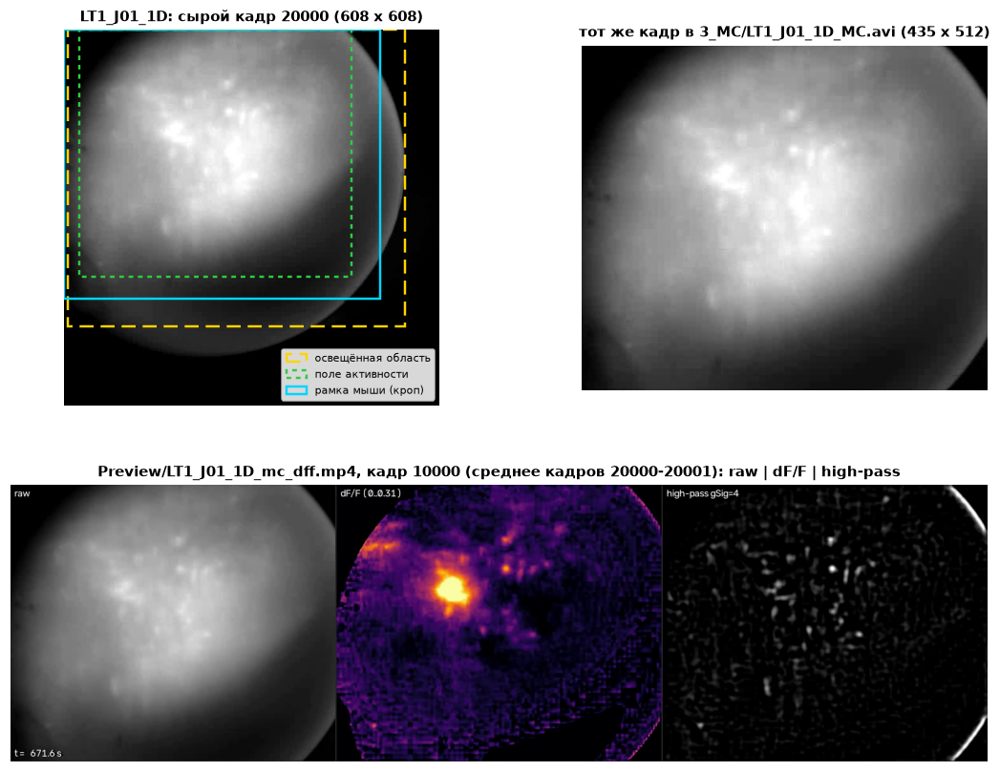
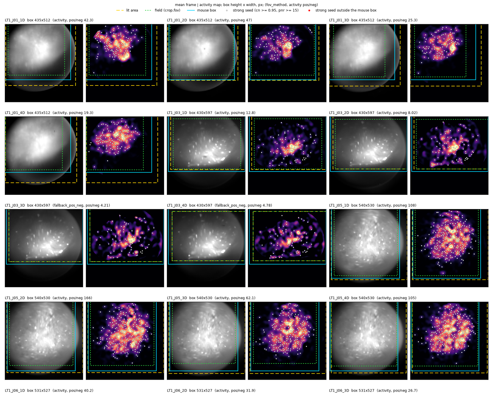
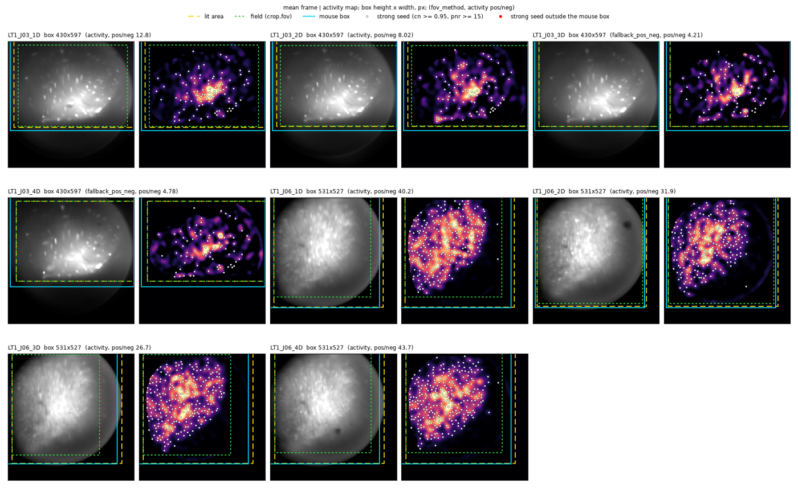
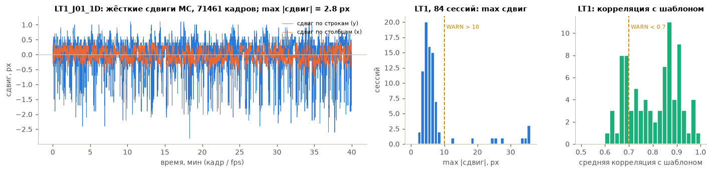
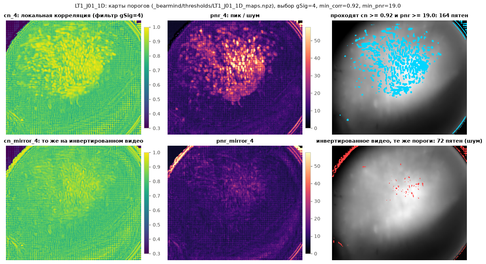
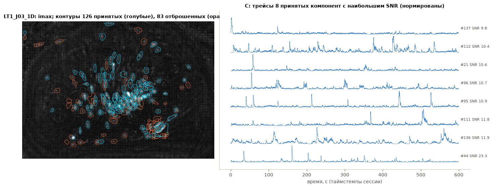
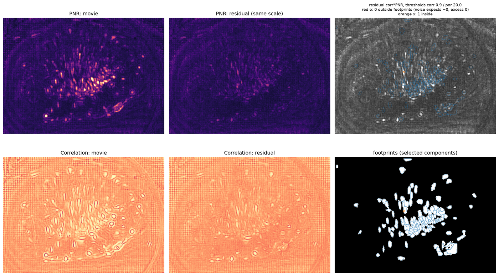
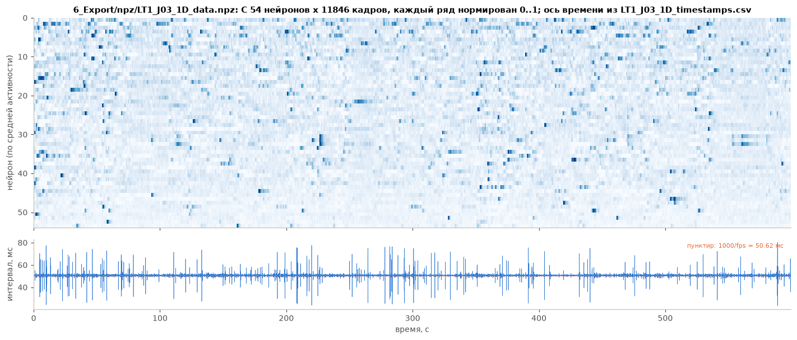
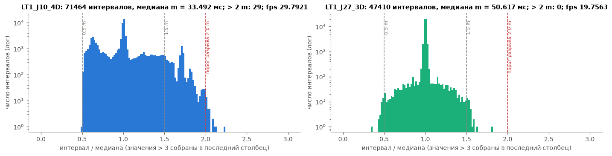
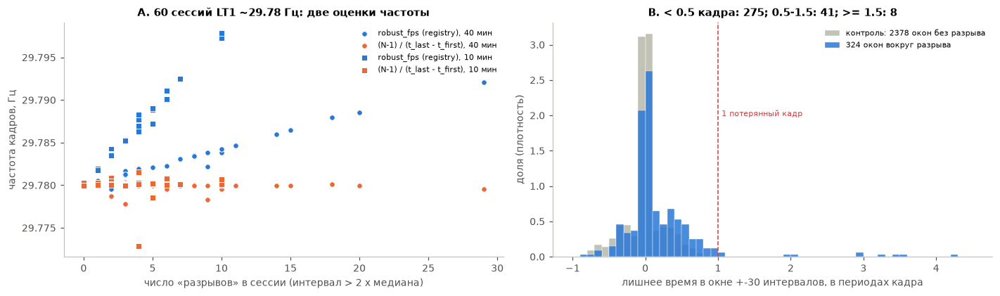

Что происходит с данными в BEARMiND
Страница описывает каждый этап конвейера: что входит, что выходит, что делает алгоритм, какие параметры, какие проверки, что вы можете изменить. Каждое утверждение о коде несёт ссылку «код» на файл и строку. Каждое число взято из файла; файл назван рядом. Подробности спрятаны в раскрывающиеся блоки.
Коротко: главное
- Цепочка. Сырые AVI → скан (реестр, FPS, аномалии) → кроп → MC → карты порогов → вы: пороги → CNMF-E → вы: инспекция или Not needed → автоинспекция → экспорт. Превью — боковые этапы по флажку. Папки
2_Cropнет: обрезанное видео пишет сразу MC в3_MC. - FPS доходит до всех потребителей одинаково, кроме автоинспекции: она берёт округлённое значение (20 вместо 19,756, 30 вместо 29,78). Это проверено на всех 8 сессиях тестового корня: реестр = параметры MC =
frCNMF-E =fpsв JSON и NPZ экспорта (5.3). - Правило разрывов на установке 29,78 Гц считает дрожание интервалов за потерю кадров. Примерно 85% из 324 «разрывов» — не потери. Из-за этого FPS завышен до 0,0125 Гц, а предупреждение
dropped_framesстоит у 55 из 84 сессий LT1 (5.4). - У LT1_J05_1D испорчена последняя строка таймстемпов. Скан этого не видит. Строка попадёт в экспорт (Внимание).
- Проверка MC «max сдвиг» срабатывает на первом кадре. Первый кадр чёрный в 10 сессиях LT1; все 5 ошибок уровня ERROR (> 30 px) — из-за него (Внимание).
- Заголовки AVI LT1 говорят 20 к/с у всех 84 сессий, хотя 60 сессий сняты с частотой 29,78 Гц. Брать FPS из видео для серий без таймстемпов нельзя без проверки (Внимание).
Все находки «Внимание» собраны в разделе 7. Код не менялся.
1. Обзор конвейера
Серия — одна папка. Внутри неё 1_Raw с сырыми видео. Остальные папки создаёт программа. Каждая сессия идёт через семь основных этапов. Два боковых этапа (превью) делают видео для глаз; от них ничего не зависит.
Батч ждёт человека в двух местах: пороги CNMF-E и ворота ручной инспекции (гейт — точка ожидания решения человека). Ещё одно ожидание автоматическое: MC сессии ждёт, пока кроп закончится у всех сессий этой мыши.
код
Папки:bearmind/paths.py:17-126 (1_Raw 18, 0_TimeStamps 22, 3_MC 25-28, 4_Estimates 31, 5_Inspection 34-43, 6_Export 47-56, Preview 60-63, _bearmind 68-126). Этапы: bearmind/registry.py:17-21. Ожидания: bearmind/runner.py:75-79 (WAIT_CHECKS: mc, cnmf, gate), bearmind/stages/mc.py:28-45 (crop_finalize), bearmind/stages/cnmf.py:102-103 (thresholds), bearmind/stages/gate.py:49-64 (manual_inspection).Синие рамки — основные этапы батча. Фиолетовые — решения человека. Пунктир бирюзовый — боковые этапы (превью). Жёлтая плашка — автоматическое ожидание.
| Этап | Вход | Выход (файлы) | Поля реестра | Ждёт |
|---|---|---|---|---|
| Скан | AVI-чанки, таймстемпы, metaData.json (legacy) | _bearmind/registry/<SID>.json, scan_unrecognized.csv | parts, n_frames, fps, fps_info, anomalies, excluded | запускает человек |
| Кроп | 3000 кадров (3 окна по 1000) | _bearmind/crop/<SID>_projection.npz, crop_overview.png, рамка в конфигах | stages.crop.metrics: fov, fov_lit, fov_activity, fov_method, activity_pos_neg, frame_shape, box | — |
| MC | все кадры, рамка, FPS | 3_MC/<SID>_MC.avi, _MC_shifts.npy | max_shift_px, mean_template_corr, n_frames, crop | рамку мыши |
| Пороги | MC-видео | _bearmind/thresholds/<SID>_maps.npz | suggested, gsig_range, n_frames, map_workers | — |
| CNMF-E | MC-видео, пороги, FPS, карты | 4_Estimates/<SID>_estimates.pickle, Preview/<SID>_cnmf_residual.png | n_components, n_accepted, missed_cells, median_snr, ssub_B, need_gib, patch_workers | пороги |
| Гейт | решение человека, файл ручной инспекции | — (решение в реестре) | gate, who, when | инспекцию |
| Автоинспекция | estimates или manual_estimates, round(FPS), модель | 5_Inspection/<SID>/<SID>_processed.pickle и таблицы | n_initial, n_after_merge, n_deleted, n_merge_groups, n_kept, deleted_frac, autoinspection_fps | — |
| Экспорт | processed.pickle, таймстемпы сессии, FPS | 6_Export/npz/…, 6_Export/filters/… | n_neurons, n_exported, median_snr, … | — |
код
Выходы этапов:bearmind/stages/crop.py:46-53, bearmind/stages/mc.py:175-185, bearmind/stages/thresholds.py:171-173, bearmind/stages/cnmf.py:287-303, bearmind/stages/gate.py:64, bearmind/stages/autoinspect.py:83-92, bearmind/stages/export.py:173-210. Обязательные выходы: bearmind/runner.py:82-92.2. Как батч решает, что считать
- Порядок — по этапам, не по сессиям. Батч берёт самый ранний этап, который можно сделать, а среди сессий — первую по имени. Поэтому сначала кроп всех сессий, потом MC всех, потом карты. Сейчас в LT1 так и есть: в
_bearmind/heartbeat.jsonкроп и MC готовы у 84 сессий, карты — у одной.код
bearmind/runner.py:480-498(next_ready: «lowest index in ALL_STAGES first, then sid order»). Данные:H:\Projects\LT1\CalciumData\_bearmind\heartbeat.json(by_stage: crop 84, mc 84, thresholds 1; 12.11.2026 18:18). - Этап «актуален», если он в состоянии DONE, его хэш параметров (отпечаток набора параметров) совпадает с текущим и его обязательные файлы на месте. Иначе этап и все этапы после него считаются заново.
код
bearmind/runner.py:386-392(current),bearmind/runner.py:302-309(хэш этапа включает хэши всех предыдущих),bearmind/config.py:123-124(sha256 JSON). - Что входит в хэш — функция
stage_params. Перечень по этапам дан в каждом разделе ниже («Что вызывает пересчёт»). Машинные настройки (пул процессов, temp) в хэш не входят. Исключение: CNMF-E сам выбираетssub_Bпод бюджет памяти машины, и это значение в хэше.код
bearmind/runner.py:241-299; ssub_B:bearmind/stages/cnmf.py:108-109,65-78. - Конфиги слоями: defaults.yaml < series.yaml < mice/<мышь>.yaml < sessions/<SID>.yaml, плюс machine.yaml. Позднее перекрывает раннее. У LT1 в
series.yamlтолькоpreview: enabled: false; в конфигах мышей — рамка кропа; в конфигах сессий — положение рамки и пороги.код
bearmind/config.py:100-112. Данные:H:\Projects\LT1\CalciumData\_bearmind\config\. - Каждый этап — в своём процессе. Падение этапа не останавливает батч; упавший процесс перезапускается 1 раз; этап без роста CPU 30 минут убивается.
код
bearmind/defaults.yaml:137-145;bearmind/runner.py:1377-1394. - Проверки (checks) никогда не останавливают батч. Они пишут уровень ok / warning / error в реестр, в Monitor, в
summary.csvи в JSON экспорта. Ошибка проверки — это сигнал вам, а не стоп.код
bearmind/checks.py:1(«never stopping the batch»),bearmind/runner.py:1344-1359,bearmind/provenance.py:76. - Аномалии этапов не исключают сессию. Исключают только аномалии скана уровня error (и ваше решение Exclude).
код
bearmind/scan.py:378-399(«Anomalies tagged with a stage … do not exclude the session»).
3. Этапы
3.1 Скан
Вход
Папки в 1_Raw с AVI. Bonsai: <SID>/<SID>_<n>.avi и <SID>_Mini_TS.csv (или _timestamp.csv, ищется ещё в 0_TimeStamps). Legacy UCLA: <SID>/<дата>/<время>/Miniscope/<n>.avi, timeStamps.csv, metaData.json.
Выход
Один JSON на сессию в _bearmind/registry (реестр — файл состояния сессии): части (parts) с чанками (отдельными AVI-файлами), число кадров, FPS и его сводка, аномалии, решения человека, флаг исключения, записи этапов. Папки, которые не удалось прочитать как сессию, — в scan_unrecognized.csv.
Что делает, по шагам
- Обходит
1_Raw. Папку с AVI определяет как bonsai или legacy по именам; иначе — в список нераспознанных.код
bearmind/scan.py:98-123,56-64 - Для каждой части: читает заголовок каждого чанка (число кадров, размер). Проверяет, что последний кадр последнего чанка декодируется.
код
bearmind/scan.py:137-193;bearmind/video.py:125-147 - Читает таймстемпы (метки времени кадров). Bonsai пишет тики по 100 нс; программа делит на 104 и получает миллисекунды.
код
bearmind/timestamps.py:33-55 - Применяет правила отбрасывания кадров: битый последний кадр, лишний кадр в конце каждого чанка. Режет часть до числа строк таймстемпов.
код
bearmind/scan.py:182-201,264-281 - Склеивает части по времени старта, если частей несколько.
код
bearmind/scan.py:230-262,bearmind/timestamps.py:82-101 - Считает FPS функцией
robust_fps(подробно в 5.1) и ищет разрывы.код
bearmind/scan.py:290-304 - Сравнивает FPS сессии с другими сессиями той же мыши.
код
bearmind/scan.py:458-483 - Пишет реестр. При пересканировании заменяет только аномалии скана; решения человека и записи этапов остаются. Пересчитывает флаг исключения.
код
bearmind/scan.py:485-512,378-399
код
bearmind/defaults.yaml:5-12, 130. У LT1 эти значения не переопределены (_bearmind/config/series.yaml содержит только preview).Проверки и что делать: все аномалии скана, их правила и ваши действия — в разделе 4. Пересчёт: скан не этап батча; его запускает человек (Scan/Rescan). Но поля реестра, которые он пишет, входят в хэши этапов: части и число кадров — в хэш кропа, FPS — в хэши MC, CNMF-E и автоинспекции, файлы таймстемпов — в хэш экспорта. Поэтому пересканирование с изменёнными файлами пересчитывает этапы. код
bearmind/runner.py:252-259, 285, 291-298; bearmind/stages/cnmf.py:107
3.2 Кроп
Кроп (обрезка кадра) находит поле, где есть клетки, и ставит одну рамку одного размера на все сессии мыши. Видео этап не пишет: он пишет числа в конфиги. Обрезает кадры уже MC.
Что делает, по шагам
- Читает 3000 кадров: три окна по 1000 подряд идущих кадров — начало, середина, конец сессии. Чанки вне окон не декодируются.
код
bearmind/stages/crop.py:29-30;bearmind/video.py:215-245;bearmind/defaults.yaml:15 - Средний кадр сглаживает гауссом (σ = 5 px). Освещённая область — самая большая связная область ярче, чем p1 + 0,2 × (p99 − p1). Она должна занимать ≥ 5% кадра, а контраст p99 − p1 должен быть ≥ 5 уровней серого; иначе поля нет.
код
bearmind/crop.py:26-48,11;bearmind/defaults.yaml:17-18 - По этим 3000 кадрам строит карты CNMF-E (корреляция cn и PNR — отношение пика к шуму) с gSig = 4, и такие же карты инвертированного видео (зеркальные). Карта активности — cn·pnr минус то же для инвертированного видео: шум даёт одинаковые значения в обоих, транзиенты только в прямом.
код
bearmind/stages/crop.py:34-42,12;bearmind/crop.py:64-79 - Карту сглаживает (σ = 10 px), обнуляет вне освещённой области, сжатой на 10 px (край линзы), и обрезает сверху по 99-му процентилю.
код
bearmind/crop.py:12-13,57-79 - Если положительная масса карты меньше 8 × отрицательной — активность не отличить от шума; полем становится освещённая область (
fallback_pos_neg).код
bearmind/crop.py:19,145-154 - Иначе поле — строки и столбцы, где лежит масса карты от 0,5% до 99,5%, плюс 20 px с каждой стороны. Сильные затравки (cn ≥ 0,95 и pnr ≥ 15) всегда внутри поля. Поле меньше 25% освещённой области не принимается (
fallback_small).код
bearmind/crop.py:101-133,14,23;bearmind/defaults.yaml:22-23 - Когда кроп готов у всех сессий мыши, батч ставит рамку: высота и ширина = максимум полей по сессиям + 2 × 10 px, но не больше кадра. Каждую сессию рамка центрирует на её поле и сдвигает внутрь кадра. Размер пишется в
config/mice/<мышь>.yaml(crop.box), положение — вconfig/sessions/<SID>.yaml(crop.box_pos). Затем перерисовываетсяcrop_overview.png.код
bearmind/stages/crop.py:73-125;bearmind/crop.py:157-185;bearmind/runner.py:1086-1152;bearmind/defaults.yaml:16 - Если поля нет совсем, сессия идёт без кропа (
box_pos: null) с аномалиейfov_not_found.код
bearmind/stages/crop.py:117-124
Проверки: числовых проверок нет. Аномалии этапа: fov_not_found (warning), crop_finalize_failed (error; рамка не поставлена, MC ждёт). Смотреть результат нужно глазами на _bearmind/crop_overview.png. код
bearmind/runner.py:99, 1170-1186; bearmind/crop_overview.py:1-5
Что можно менять: параметры crop.* в series.yaml; рамку мыши руками в config/mice/<мышь>.yaml (она станет box_source: manual и больше не пересчитывается). Пересчёт кропа: изменились части/чанки/число кадров, любой параметр crop.* кроме box/box_pos/box_source, или версия правила FOV_RULE = "activity_v2". Рамка и её положение — входы хэша MC, не кропа. код
bearmind/runner.py:249-256, 222-223; bearmind/crop.py:10; bearmind/stages/crop.py:76-92
Пример LT1
По реестру LT1 у 80 сессий поле найдено по активности, у 4 — запасной вариант fallback_pos_neg. У LT1_J01_1D: освещённая область 480 × 545 px, поле активности 399 × 441 px, отношение масс 42,3; рамка мыши LT1_J01 — 435 × 512 px в положении (0, 0). файл
H:\Projects\LT1\CalciumData\_bearmind\registry\LT1_J01_1D.json → stages.crop.metrics; _bearmind\config\mice\LT1_J01.yaml; подсчёт fov_method по 84 файлам реестра.

3_MC/LT1_J01_1D_MC.avi (435 × 512). Внизу: кадр 10000 превью Preview/LT1_J01_1D_mc_dff.mp4 (среднее кадров 20000–20001; подпись t = 671,6 с = 20000 / 29,78). Файлы прочитаны по одному кадру.
H:\Projects\LT1\CalciumData\_bearmind\crop_overview.png (весь файл — 28 рядов, 1716 × 9163 px). Слева в паре — средний кадр, справа — карта активности с сильными затравками. Жёлтый — освещённая область, зелёный — поле, голубой — рамка мыши.Обзор кропа тестового корня (8 сессий, все этапы пройдены)

H:\Projects\_bearmind_test\lt1_J03_J06\_bearmind\crop_overview.png. У LT1_J03_3D и _4D отношение масс 4,21 и 4,78 < 8: полем стала освещённая область.3.3 MC (коррекция движения)
Вход
Сырые чанки сессии с правилами отбрасывания из реестра; рамка из конфигов; FPS из реестра.
Выход
3_MC/<SID>_MC.avi — обрезанное и выровненное видео, FFV1 (сжатие без потерь), uint8, с частотой кадров сессии. 3_MC/<SID>_MC_shifts.npy — сдвиг (y, x) каждого кадра, float32.
Что делает, по шагам
- Ждёт рамку мыши.
код
bearmind/stages/mc.py:28-45,58-71 - Читает все кадры как один поток (чанки подряд, части подряд, правила отбрасывания), обрезает рамкой и пишет во временный BigTIFF uint8.
код
bearmind/stages/mc.py:156-157,85-89;bearmind/video.py:150-201 - CaImAn
MotionCorrect, только жёсткая коррекция (pw_rigid false): видео делится на ⌈T/500⌉ кусков; каждый кадр сопоставляется с шаблоном (средним кадром) после пространственного high-pass фильтра gSig_filt = 8; поиск сдвига в пределах ±35 px. Пул — 16 процессов.код
bearmind/stages/mc.py:143-163;bearmind/defaults.yaml:26-35,134-135 - Применяет сдвиги к кадрам по одному: OpenCV warpAffine с кубической интерполяцией, края заполняются копией (border_nan copy), результат округляется в uint8. Пишет FFV1 AVI с частотой = FPS сессии.
код
bearmind/stages/mc.py:92-111,170-171; CaImAnmotion_correction.py:512-550;bearmind/video.py:248-278 - Считает метрики: max |сдвиг| по всем кадрам и осям; среднюю корреляцию 200 равномерно взятых кадров (после того же high-pass) с шаблоном CaImAn.
код
bearmind/stages/mc.py:114-131,175-180
код
bearmind/defaults.yaml:24-35, 119-124; bearmind/stages/mc.py:144-145, 160-161; bearmind/checks.py:61-65Пересчёт MC: изменились mc.*, рамка (box), положение (box_pos), FPS сессии, или пересчитан кроп. Число процессов пула в хэш не входит. код
bearmind/runner.py:257-259
Пример LT1

3_MC/LT1_J01_1D_MC_shifts.npy (71 461 кадр); max |сдвиг| 2,8 px. В центре и справа: max сдвиг и корреляция с шаблоном по 84 сессиям LT1 (_bearmind/registry/*.json → stages.mc.metrics). Сдвиг > 10 px — у 10 сессий; корреляция < 0,7 — у 21.код и данные
bearmind/stages/mc.py:176 (np.max(np.abs(shifts)) по всем кадрам). Яркость: кадры 0–2 первого чанка каждой сессии (1_Raw/<SID>/<SID>_0.avi), сдвиги — 3_MC/<SID>_MC_shifts.npy; скрипт scripts/dfr_firstframe.py. Чёрный кадр 0: J17_2D, J18_2D, J24_2D, J24_3D, J26_2D, J30_2D, J53_2D, J54_2D, J57_2D, J58_2D.данные
bearmind/defaults.yaml:119-124; реестр LT1 stages.mc.metrics.mean_template_corr; тестовый корень: _bearmind/registry/LT1_J06_1D.json, LT1_J06_2D.json (stages.cnmf.metrics.median_snr).3.4 Пороги
Этап строит карты, по которым CNMF-E выбирает затравки (seed — точка-кандидат в центр клетки). Затем батч ждёт, пока человек выберет три числа: gSig (радиус клетки в пикселях для фильтра), min_corr и min_pnr.
Что делает, по шагам
- Декодирует MC-видео один раз во временный uint8 memmap (файл на диске, который читается как массив). Считает средний и максимальный кадр.
код
bearmind/stages/thresholds.py:118-128,24-34 - Для каждого gSig из 3, 4, 5, 6, 7: фильтрует кадры ядром CNMF-E, вычитает среднее во времени, считает карту корреляции cn и карту PNR так же, как инициализация CNMF-E; то же для инвертированного видео (зеркальные карты). Каждый gSig — в своём процессе, сколько помещается в память.
код
bearmind/stages/thresholds.py:111-137,42-52;bm_qc.py:110-175 - Подсказка порогов по gSig = 4: метод
mirror_fdr— на сетке min_corr 0,50–0,98 (шаг 0,02) и min_pnr 2–20 (шаг 0,5) считает затравки в прямых и зеркальных картах; доля ложных (FDR) = зеркальные / прямые; выбирает самую мягкую пару с FDR ≤ 0,1. Если такой пары нет —robust_bg: медиана + 3 робастных SD каждой карты (min_corr обрезается до 0,99).код
bearmind/stages/thresholds.py:66-76,114;bm_qc.py:299-384(сетка 342-343, обрезка 330);bearmind/config.py:127-131 - Пишет
_bearmind/thresholds/<SID>_maps.npz(mean, max, cn_g, pnr_g, cn_mirror_g, pnr_mirror_g) и подсказку в реестр.код
bearmind/stages/thresholds.py:79-90,154-173
thresholds accept-suggested, thresholds set. Выбор пишется в config/sessions/<SID>.yaml (cnmf.gSig, min_corr, min_pnr), решение thresholds в реестр и строка в threshold_choices.csv. код
bearmind/threshold_model.py:71-98; bearmind/gui/thresholds_tab.py:329-334; bearmind/actions.py:357-365, 626-656; bearmind/cli.py:690-693; bearmind/defaults.yaml:49-51Проверки: нет. Аномалия no_threshold_suggestion (warning), если ни один метод не дал чисел. Пересчёт карт: изменились thresholds.gsig_range или cnmf.tsub, или пересчитан MC. Сами пороги — вход CNMF-E, не карт. код
bearmind/stages/thresholds.py:167-170; bearmind/runner.py:260-261
Пример LT1

H:\Projects\LT1\CalciumData\_bearmind\thresholds\LT1_J01_1D_maps.npz. Выбор автора (threshold_choices.csv, 12.11.2026 17:56): gSig 4, min_corr 0,92, min_pnr 19,0 — совпадает с подсказкой mirror_fdr. При этих порогах 164 пятна на прямых картах и 72 на зеркальных (те же числа, что в CSV: n_blobs 164, n_mirror_blobs 72; пересчитано функцией threshold_model.counters).mirror_fdr дала min_pnr 18–20, где 20 — верх сетки. У всех 4 сессий J06 mirror_fdr не нашёл пары с FDR ≤ 0,1; у LT1_J06_1D даже в самом строгом углу сетки (0,98; 20) FDR = 0,176. Тогда сработал robust_bg с min_corr 0,99 (верхняя обрезка) и min_pnr 30,8–47,7. Эти значения приняты без изменений (who = lt1-run-agent). Возможно, сетке не хватает верхней части; это не проверено.
код и данные
bm_qc.py:330, 342-343, 377-379. Данные: H:\Projects\_bearmind_test\lt1_J03_J06\_bearmind\threshold_choices.csv; повтор подсказки по сохранённым картам — scripts/dfr_suggest.py (J06_1D: robust_bg 0,99 / 47,7 — совпадает с реестром; mirror_fdr: «no threshold pair reaches FDR <= 0.1»).3.5 CNMF-E
CNMF-E (метод выделения клеток для однофотонных данных) раскладывает видео на пространственные карты компонент A (футпринты), их трейсы C, спайковую оценку S и фон.
Что делает, по шагам
- Ждёт порогов: без gSig, min_corr или min_pnr в конфиге этап не начинается.
код
bearmind/stages/cnmf.py:101-103,126-128 - Собирает параметры: всё из
cnmf.*, плюс gSig = (g, g), gSiz = (4g+1, 4g+1), fr = FPS сессии (не делится на tsub).код
bearmind/stages/cnmf.py:95-110 - Выбирает ssub_B (прореживание фона в пространстве): самое слабое из 2, 3, 4, при котором прогноз памяти помещается в бюджет машины.
код
bearmind/stages/cnmf.py:58-78;bearmind/defaults.yaml:36-45 - Декодирует MC-видео в uint8, пишет float32 memmap в порядке CaImAn (+0,0001, побайтно как
cm.save_memmap). Берёт картинку imax из карты PNR этого gSig.код
bearmind/stages/cnmf.py:141-188,240-245 CNMF.fitна пуле процессов, затемevaluate_components: компоненты с SNR ≥ 2,5 или r_value (пространственная корреляция с данными) ≥ 0,95 принимаются (idx_components).код
bearmind/stages/cnmf.py:250-255;bearmind/defaults.yaml:75-77; CaImAnsource_extraction/cnmf/estimates.py:1053-1066- Добавляет к estimates: imax, cnmf_dict (все параметры), путь к MC-видео, число процессов. Строит карты остатка (
Preview/<SID>_cnmf_residual.png) и число пропущенных клеток (residual_excess_outside). Пишет4_Estimates/<SID>_estimates.pickleпоследним.код
bearmind/stages/cnmf.py:259-280
Все параметры CNMF-E (defaults.yaml) и что они значат
| Параметр | Значение | Смысл |
|---|---|---|
| method_init | corr_pnr | инициализация CNMF-E по картам корреляции и PNR |
| gSig / gSiz | из конфига сессии / 4·gSig+1 | радиус клетки / размер окна клетки |
| min_corr, min_pnr | из конфига сессии | пороги затравок |
| K | null | число компонент на патч не ограничено |
| rf / stride | 40 / 25 | полуразмер патча / перекрытие патчей, px |
| only_init | true | в патчах только инициализация, дальше обновление на всём поле |
| merge_thr | 0.8 | порог корреляции для слияния компонент |
| p | 1 | порядок авторегрессии трейса |
| method_deconvolution | oasis | алгоритм деконволюции трейса |
| tsub / ssub | 1 / 1 | прореживание во времени / пространстве: нет |
| nb / nb_patch / low_rank_background | 0 / 0 / null | фон по кольцевой модели CNMF-E |
| ssub_B / ring_size_factor | 2 (или больше по памяти) / 1.5 | прореживание фона / размер кольца |
| update_background_components, center_psf, normalize_init | true, true, false | стандарт для 1p |
| del_duplicates / border_pix | true / 5 | удаление дублей / край без затравок |
| min_SNR / rval_thr / use_cnn | 2.5 / 0.95 / false | оценка компонент |
| decay_time | 1 (с) | используется только в оценке компонент (см. FPS) |
| fr | FPS сессии | см. 5.2 |
код
bearmind/defaults.yaml:52-77код
bearmind/defaults.yaml:125-126; bearmind/checks.py:40-56, 66-69; bearmind/stages/cnmf.py:113-123Пересчёт CNMF-E: изменился любой параметр cnmf.* (в том числе пороги), FPS, выбранный ssub_B, или пересчитаны MC/карты. код
bearmind/runner.py:262-268
Пример: тестовый корень, LT1_J03_1D
Пороги 4 / 0,90 / 20,0. 209 компонент, принято 126, пропущенных клеток 0, медианный SNR принятых 3,86. ssub_B 2, прогноз памяти 22,3 ГиБ, 31 процесс. файл
H:\Projects\_bearmind_test\lt1_J03_J06\_bearmind\registry\LT1_J03_1D.json → stages.cnmf.metrics.

4_Estimates/LT1_J03_1D_estimates.pickle тестового корня: imax с контурами (уровень 0,35 от максимума футпринта) 126 принятых и 83 отброшенных компонент; трейсы C восьми принятых компонент с наибольшим SNR. Ось времени — таймстемпы сессии.Карты остатка CNMF-E (Preview/LT1_J03_1D_cnmf_residual.png)

3.6 Гейт (ручная инспекция)
Гейт ничего не считает. Он ждёт решения человека по последнему результату CNMF-E.
python -m bearmind inspect) открывает сессию; Save results пишет 5_Inspection/<SID>/<SID>_manual_estimates.pickle и решение cleaned. Not needed: решение not_needed (вкладка Inspection, меню Monitor, CLI gate). код
bearmind/inspect_server.py:1-18; bearmind/actions.py:462-495; bearmind/gui/inspection_tab.py:193-195; bearmind/stages/gate.py:33-46- Решение считается, только если оно новее, чем окончание CNMF-E. После пересчёта CNMF-E гейт снова ждёт.
код
bearmind/stages/gate.py:55-57 - Для
cleanedфайл ручного результата должен существовать и быть новее файла estimates.код
bearmind/stages/gate.py:58-63 - Автоинспекция берёт ручной результат, если решение
cleaned, иначе — estimates CNMF-E.код
bearmind/stages/gate.py:67-71 - Страница инспекции строит ось времени из таймстемпов реестра, а не из FPS.
код
bearmind/inspect_server.py:203-207,932-937
Пересчёт гейта: новое решение, перезаписанный файл ручного результата, новое время окончания CNMF-E, флажок gate.enabled. При enabled: false гейт проходит сам. код
bearmind/runner.py:269-278; bearmind/stages/gate.py:50-51
Пример: в тестовом корне LT1_J03_1D — cleaned (User), остальные 7 — not_needed (lt1-run-agent). файл
реестр тестового корня, stages.gate.metrics.
3.7 Автоинспекция
Автоинспекция считает метрики каждой принятой компоненты, решает «оставить / удалить», сливает дубли и сохраняет всё в одном файле. Удалённые компоненты остаются в файле с пометкой; что уйдёт в экспорт, решает правило экспорта.
Что делает, по шагам
- Отказывается работать с файлами, где массивы SNR и r_values не выровнены с компонентами (сжатые старым кодом).
код
bearmind/stages/autoinspect.py:15-39 - Берёт FPS = round(FPS сессии): 20 или 30 для LT1.
код
bearmind/stages/autoinspect.py:53-54 - Считает метрики компонент: форма футпринта (площадь, круглость, выпуклость…), SNR и r_value CaImAn, шум, события (driada — библиотека лаборатории для анализа нейронов; вейвлет-детекция), кинетика (t_rise, t_off, tau_decay), реконструкции трейсов, расстояния между футпринтами (FBD — расстояние между границами, FCD — между центрами), корреляционные группы.
код
ae_launch.py:388-408;auto_inspector.py:1040(estimates_to_metrics) - Решение «удалить»: сначала правила (площадь < 1, круглость > 4, нет событий, event_r2_score < 0), потом ML-модель EBM (объяснимый бустинг) на оставшихся: вероятность «оставить» < 0,72 — удалить (brain hybrid).
код
auto_inspector.py:1329-1334,1647-1690,1701-1745;bearmind/defaults.yaml:79-81 - Дубли: пара в одной корреляционной группе с FBD ≤ 15 px. Если |ΔSNR| ≤ 10 — слить; иначе удалить более тусклую. Группы слияния — полная связь (каждая пара в группе близка).
код
auto_inspector.py:1850-1863,1890-1906;bearmind/defaults.yaml:87-91 - Применяет решения (слияния через CaImAn manual_merge), переводит таблицу метрик на новые номера, сохраняет
<SID>_processed.pickleсmetrics_dfиautoinspection_config.код
ae_launch.py:466-546;bearmind/stages/autoinspect.py:59-77
код
bearmind/defaults.yaml:78-97, 127; bearmind/checks.py:70-72Пересчёт: изменились autoinspect.*, версия группировки слияний (MERGE_GROUPING = "fbd_complete"), sha256 файла модели, round(FPS), или прошёл гейт заново. код
bearmind/runner.py:279-285; export_estimates_data.py:41
Пример LT1_J03_1D (тестовый корень): на входе 126 компонент, 2 группы слияния, после слияний 124, удалено 70, оставлено 54; доля удалённых 0,556. файл
реестр тестового корня → stages.autoinspect.metrics.
3.8 Экспорт
Что делает, по шагам
- Выбирает нейроны: из idx_components оставляет те, у кого вероятность ML ≥ ml_threshold (то, с которым шла автоинспекция) или кто получен слиянием, и кто не помечен delete.
код
bearmind/stages/export.py:19-36;export_estimates_data.py:174-217 - Берёт таймстемпы сессии из реестра (части склеены, каждая обрезана до своих кадров) и пишет столько строк, сколько кадров в C (не больше кадров реестра).
код
bearmind/stages/export.py:147-154,183;bearmind/timestamps.py:109-135 - Пишет
<SID>_data.npz: C (денойзированные трейсы CNMF-E, float32), component_indices, asp и reconstructions (из автоинспекции), fps. Пишет<SID>_metadata.json: fps, autoinspection_fps, параметры CNMF-E, конфиг автоинспекции, метрики экспортированных нейронов, provenance (коммит, пакеты, модель, параметры всех этапов, решения, проверки, аномалии). Пишет<SID>_filters.mat(сглаженные футпринты). Все файлы — атомарно, JSON последним.код
export_estimates_data.py:228-259,279-414;bearmind/stages/export.py:163-205;bearmind/provenance.py:58-78
код
bearmind/defaults.yaml:128-129; bearmind/stages/export.py:129-187Пересчёт: изменились ml_threshold автоинспекции, правило выбора (COMPONENT_RULE), файлы таймстемпов (имя, формат, время старта, число кадров, размер и время изменения файла), или пересчитана автоинспекция. код
bearmind/runner.py:286-298; bearmind/stages/__init__.py:11

6_Export/npz/LT1_J03_1D_data.npz — 54 нейрона × 11 846 кадров (каждый ряд нормирован); внизу — интервалы между строками LT1_J03_1D_timestamps.csv и 1000/fps из NPZ (50,62 мс).Воронка компонент по 8 сессиям тестового корня
| Сессия | Пороги (метод) | Кроп | MC сдвиг / корр. | CNMF-E всего | принято | Гейт | слияний | удалено | экспорт | Воронка | Проверки не ok |
|---|
Источник: H:\Projects\_bearmind_test\lt1_J03_J06\_bearmind\registry\*.json. Полосы: синяя — всего компонент CNMF-E, бирюзовая — принято, фиолетовая — экспортировано.
3.9 Превью
Превью — боковые этапы (от них ничего не зависит). Они идут сразу после MC и CNMF-E, если стоит флажок preview.enabled. У LT1 сейчас флажок снят; файлы в Preview/ LT1 — от более раннего прогона 12.11.2026 (104 файла).
- Превью MC:
<SID>_raw.mp4(сырое, без кропа),_mc.mp4(MC-видео) — H.264, среднее по tbin = 2 кадрам, скорость ×4, crf 23;_raw_dff.mp4и_mc_dff.mp4— панели raw | dF/F (относительное изменение флуоресценции; F0 — 10-й процентиль за 60 с) | high-pass, скорость ×2.код
bearmind/stages/previews.py:88-145;bearmind/video.py:281-326;bm_qc.py:911-1015;bearmind/defaults.yaml:146-151 - Превью CNMF-E:
<SID>_cnmf_qc.mp4— raw | raw − фон | A·C | остаток.код
bearmind/stages/previews.py:148-184 - Пересчёт: настройки превью (tbin, ssub, crf, speed) или хэш родительского этапа.
код
bearmind/runner.py:226-238;bearmind/stages/previews.py:32-45
Проверено на файлах LT1_J01_1D: _mc.mp4 идёт с частотой 21382/359 = 59,56 к/с = 29,78 × 4 / 2; _mc_dff.mp4 — 815762/27393 = 29,78 к/с = 29,78 / 2 × 2; 35 731 кадр = ⌈71 461 / 2⌉. файл
заголовки H:\Projects\LT1\CalciumData\Preview\LT1_J01_1D_mc.mp4, _mc_dff.mp4 (PyAV).
4. Аномалии скана
Аномалия скана — запись в реестре: код, уровень (warning или error), текст, флаг «исправлено автоматически» и числа. Аномалия уровня error исключает сессию, пока вы не решите иначе. Ниже — все коды, которые пишет скан, и что с ними происходит сейчас.
код
Модель:bearmind/registry.py:42-48. Исключение: bearmind/scan.py:378-399. Показ: bearmind/scan_view.py:11-24, 202-215; bearmind/gui/scan_tab.py:445-469.4.1 Полный перечень
| Код | Правило (точно) | Уровень | Что программа делает сама | Что можете сделать вы | Где видно |
|---|---|---|---|---|---|
unreadable_video«unreadable video» | Заголовок чанка или его последний кадр не читается (исключение при чтении). кодscan.py:142-146, 184-187, 215-217 | ERROR | Часть пропускается. Если частей не осталось — сессия без FPS и всегда исключена. | Исправить файлы → Rescan. Open folder. | Scan: цвет ячейки, столбец Anomalies, панель Details (ERROR / WARN / INFO / FIXED). Monitor: Excluded. summary.csv (столбец anomalies). JSON экспорта: provenance.anomalies.кодscan_tab.py:342-385, 445-469; runner.py:1688; provenance.py:77 |
broken_last_frame«broken last frame» | Последний кадр последнего чанка части не декодируется. кодscan.py:184-193; video.py:138-147 | WARN | FIXED Кадр отбрасывается (−1 кадр). | Ничего; Exclude при сомнении. | |
chunk_tail_frames«extra chunk frames» | Чанков > 1 и (кадров − строк таймстемпов) ровно = чанков − 1. кодscan.py:194-201; video.py:178-180 | WARN | FIXED Отбрасывается последний кадр каждого чанка, кроме последнего. | Ничего. | |
no_metadata«no recording start time» | Legacy: у части нет recordingStartTime.msecSinceEpoch в metaData.json. кодscan.py:154-162, 245-247 | WARN | Ничего (если часть одна). | Положить metaData.json → Rescan. | |
split_recording«split recording» | Сессия из ≥ 2 частей. Error, если legacy и хотя бы у одной части нет времени старта; иначе warning. В data — паузы между частями, с. кодscan.py:249-262 | WARN / ERROR | WARN: склейка по времени старта (legacy) или по первому таймстемпу (bonsai). ERROR: исключена, склейки нет. | Confirm stitch — только отметка «проверено» (привязана к набору частей); батч её не ждёт. ERROR: исправить файлы → Rescan.кодactions.py:426-450; scan.py:352-362; в runner.py проверки нет | |
frames_ts_mismatch«frames ≠ timestamps» | В части кадров (после отбрасываний) ≠ строк таймстемпов. Доля = |разница| / строк. ≤ 0,02 — warning, > 0,02 — error. кодscan.py:264-281; defaults.yaml:6 | WARN / ERROR | В обоих случаях часть обрезается до общей длины с конца (лишние кадры или строки в конце). WARN: FIXED. ERROR: сессия исключена. | ERROR: Accept with trimming to common length (Scan), «Accept frame mismatch» (Monitor), CLI decide accept-mismatch — ошибка становится FIXED, сессия включается. кодactions.py:413-423; scan.py:387-390; scan_tab.py:439-440 | |
no_timestamps«no timestamps found» | У какой-либо части нет файла таймстемпов или он не читается. кодscan.py:171-180, 284-286 | ERROR | FPS не считается → fps_unavailable → исключена всегда. | Положить файл (в папку сессии или 0_TimeStamps) → Rescan. Include не помогает. | |
fps_unavailable«no frame rate» | FPS = None: нет таймстемпов или < 2 положительных интервалов. кодscan.py:290-295, 365-375, 391-393; timestamps.py:67-70 | ERROR | Исключена всегда; батч не может её запланировать. | Только исправить таймстемпы → Rescan. кодactions.py:392-393; runner.py:329, 362-363 | |
dropped_frames«dropped frames» | Есть интервалы > 2 × медиана (разрывы). В data: n_gaps, max_gap_ms, n_dropped = Σ max(round(интервал/медиана) − 1, 1). кодscan.py:299-313 | WARN (во вкладке может быть INFO) | Ничего с кадрами. Разрывы выпадают из оценки FPS. Вкладка Scan показывает как INFO, если самая длинная пауза ≤ 1 с и n_dropped ≤ 1% кадров. Пауза между склеенными частями — тоже разрыв.кодscan_view.py:147-164, 179-187 | Ничего; Exclude при сомнении. | |
fps_outlier«FPS outlier» | (а) у мыши ≥ 3 сессий с FPS, и ни одна другая сессия мыши не ближе 5% по FPS; (б) legacy: отличие от номинального frameRate metaData.json > 5%. кодscan.py:458-483 | WARN | Ничего; FPS из таймстемпов используется как есть. | Проверить; Exclude при необходимости. | |
registry_recreated«registry file recreated» | Файл реестра сессии не читается как запись. кодscan.py:408-419, 505-508 | WARN | Новая запись; старый файл сохранён как .broken-<время>; решения и этапы потеряны — все этапы заново. | Ничего; при нужде вернуть решения руками. | |
not_found_in_scan«not found by the last scan» | Запись реестра есть, папки сессии последний скан не нашёл. кодscan.py:422-427, 514-522 | ERROR | Исключена до возврата папки; этапы и решения сохраняются. | Вернуть папку → Rescan. | |
| (нераспознанная папка) | Папка с AVI, но имена не по шаблону: «folder name is not a session id», «AVI names do not match <SID>_<n>.avi», «legacy folder name is not a session id», «Miniscope AVI names are not <n>.avi». кодscan.py:98-123 | — | Сессии нет; строка в scan_unrecognized.csv. | Переименовать → Rescan. |
decide include снимает и исключение по ошибке, кроме нет-FPS и пропавшей папки. Решения хранятся в реестре; действует последнее. код
scan_tab.py:36-37, 422-430; actions.py:375-410; scan.py:378-399; cli.py:498-521accept_mismatch = true понижает до FIXED любую будущую ошибку frames_ts_mismatch этой сессии, какого бы размера она ни была после замены файлов. Confirm stitch, наоборот, привязан к набору частей. И обрезка всегда идёт с конца: программа не проверяет, где на самом деле лишние кадры. Руководство студента советует нажимать Accept, «если разница в конце», но программа этого не показывает.
код
bearmind/scan.py:387-390 (Accept), 352-362 (отпечаток склейки), 280-281 (обрезка до min); docs/students/series-workflow.md:123.код
bearmind/video.py:163-187 (части подряд); bearmind/stages/autoinspect.py:54; bearmind/stages/export.py:147, 183.4.2 Диаграмма решений
Проверки идут в этом порядке для каждой сессии. Справа — исход: исправлено само (зелёный), предупреждение (жёлтый), исключение (красный).
Диаграмма собрана по bearmind/scan.py:98-305 и 378-399. Отдельно скан помечает исчезнувшие папки (not_found_in_scan) и нечитаемые записи реестра (registry_recreated).
4.3 Что найдено в LT1
Сейчас в реестре LT1 (84 сессии, 21 мышь, все bonsai) два кода. Исключённых сессий нет. Нераспознанных папок нет. Вкладка Scan показывает «with problems 0»: все строки разрывов — INFO, расхождения — FIXED.
| Код | Уровень | Сессий | Как показано | Примеры |
|---|---|---|---|---|
dropped_frames | WARN | 55 | INFO «no gap longer than 1 s, at most 1% of frames lost» | LT1_J01_1D: 3 gaps (max 134 ms); LT1_J10_4D: 29 gaps (max 75 ms); LT1_J03_2D: 1 gap (max 219 ms) |
frames_ts_mismatch | WARN | 7 | FIXED «fixed automatically» | LT1_J05_1D: 47 416 кадров, 47 309 строк (+107, 0,2%); J08_1D, J10_2D, J14_1D, J17_1D, J26_3D, J53_1D: −1 (строк на одну больше) |
данные
H:\Projects\LT1\CalciumData\_bearmind\registry\*.json (anomalies), модель вкладки scan_view.scan_view на тех же файлах; _bearmind\scan_unrecognized.csv (только заголовок).LT1_J05_1D_Mini_TS.csv обрезана — 16 цифр вместо 18 (6392811466356614), в конце нет перевода строки. Время в ней идёт назад на 6,3·1010 с. Скан этого не видит: robust_fps молча выбрасывает неположительные интервалы, отдельной проверки монотонности нет. FPS от этого не пострадал (19,7563). Но строка пройдёт в 6_Export/npz/LT1_J05_1D_timestamps.csv последней строкой и в ось времени страницы инспекции. Видео при этом на 107 кадров (5,4 с) длиннее таймстемпов; эти кадры отрезаны с конца (WARN, FIXED). Остальные 83 файла LT1 монотонны.
код и данные
bearmind/timestamps.py:67-68 (d = d[d > 0]); bearmind/stages/export.py:147-148, 183; bearmind/timestamps.py:124-135; bearmind/inspect_server.py:203-207. Проверка всех 84 файлов: scripts/dfr_monotonic.py.5. Частота кадров (FPS)
5.1 Как считается
- Время кадров: таймстемпы всех частей, каждая часть обрезана до своих кадров, части по порядку старта.
код
bearmind/scan.py:264-288 - Интервалы d = разности соседних времён; неположительные выбрасываются; нужно ≥ 2 интервалов.
код
bearmind/timestamps.py:67-70 - m = медиана интервалов. Разрыв — интервал > gap_factor × m = 2m. Разрывы выбрасываются. Короткие и неровные интервалы остаются: опоздание одного кадра делает один интервал длинным, а следующий коротким, и в сумме они гасятся.
код
bearmind/timestamps.py:58-79(докстринг 59-65) - Формула:
FPS = 1000 × (число оставшихся интервалов) / (сумма оставшихся интервалов, мс)Вместе с FPS пишутся: n_outliers — интервалы вне [0,5 m; 1,5 m] (только для сведения, в FPS входят); n_gaps; max_gap_ms — самый длинный интервал; median_interval_ms; source = "timestamps".
код
bearmind/timestamps.py:24-30,72-79;bearmind/scan.py:296-298 - Без файла таймстемпов FPS нет. Сессия получает
no_timestampsиfps_unavailableи исключена всегда; Include не помогает; батч её не планирует. Запасного пути нет: ни заголовок AVI, ниfps_data.csv, ни номинальный frameRate батч не использует. Номинальный frameRate legacy-записей нужен только для проверкиfps_outlier. Если таймстемпов нет хотя бы у одной части, FPS нет у всей сессии.код
bearmind/scan.py:179-180,283-287,391-393,480-483;bearmind/actions.py:392-393;bearmind/runner.py:329,362-363
Где хранится. В реестре: fps (число) и fps_info {fps, n_outliers, n_gaps, max_gap_ms, median_interval_ms, source}. Копии: stages.mc.params.fps, stages.cnmf.params.fr, stages.autoinspect.params.fps (округлённый), stages.autoinspect.metrics.autoinspection_fps. В JSON экспорта: fps, autoinspection_fps, cnmf_params.fr, autoinspection_config.fps, provenance.fps. В NPZ экспорта: fps. код
bearmind/registry.py:94-95; bearmind/runner.py:259, 285; bearmind/stages/cnmf.py:107; bearmind/stages/autoinspect.py:91; bearmind/stages/export.py:166-168; bearmind/provenance.py:70-71; export_estimates_data.py:405
5.2 Кто её использует
| Потребитель | Что берёт | Для чего | Код |
|---|---|---|---|
| MC | rec.fps как есть | частота кадров контейнера _MC.avi (дробь со знаменателем ≤ 1000). На сдвиги не влияет. Входит в хэш MC. | bearmind/stages/mc.py:146, 171; bearmind/video.py:248-249, 263; bearmind/runner.py:259 |
| CNMF-E | fr = float(rec.fps) | В CaImAn 1.13.2 fr нужен только оценке компонент: N_samples = ⌈fr × decay_time⌉ (20 или 30 кадров при decay_time 1 с) — длина окна для SNR транзиента; окно r_value: tB = min(−2, ⌊−5/30·fr⌋), tA = max(5, ⌈25/30·fr⌉). Значит, fr влияет на SNR_comp, r_values и на то, какие компоненты приняты. В саму факторизацию fit не входит. Входит в хэш CNMF-E. | bearmind/stages/cnmf.py:106-107; CaImAn source_extraction/cnmf/estimates.py:1058-1059, components_evaluation.py:574, 401-402 |
| QC CNMF-E (карты остатка) | rec.fps | только для видео; в этапе CNMF-E видео не делается | bearmind/stages/cnmf.py:265; bm_qc.py:715-717, 745-747 |
| Автоинспекция | round(rec.fps): 20 или 30 | все метрики во времени: события в минуту, t_rise, t_off, tau_decay (кадры / fps), доля пересечений половины, время у пика, вейвлет-масштабы driada, длительность сессии. Сохраняется как autoinspection_fps. Округление намеренное: «модель ML и данные статьи построены с целым fps». Входит в хэш автоинспекции (округлённое). | bearmind/stages/autoinspect.py:53-54, 61, 91; ae_launch.py:343, 388-389, 483, 526; auto_inspector.py:314-320, 494, 638, 837, 913; bearmind/runner.py:285 |
| Автоинспекция: est.time | default_fps = round(fps) | LoadEstimates ищет файл <SID>*timestamp.csv относительно текущей папки процесса; не находит и строит linspace(0, n_frames // fps, n_frames). Метрики это поле не используют; оно сохраняется в processed.pickle. | bm_examinator.py:124-144, 147-158; auto_inspector.py:1079 |
| Экспорт | rec.fps как есть | fps в JSON и NPZ; autoinspection_fps из реестра. Файл таймстемпов экспорта пишется из исходных таймстемпов, не из FPS. | bearmind/stages/export.py:147-148, 166-168, 183; export_estimates_data.py:296-298, 405 |
| Превью MC | rec.fps | частота mp4 = fps × speed / tbin; F0 для dF/F: бины по round(fps × 1 с), окно 60 с; подпись t = кадр / fps | bearmind/stages/previews.py:94, 116, 120, 131; bearmind/video.py:296; bm_qc.py:919, 1012-1014 |
| Превью CNMF-E | rec.fps | частота видео = fps / tbin × speed; подписи времени | bearmind/stages/previews.py:170; bm_qc.py:747, 774 |
| Страница инспекции (гейт) | таймстемпы реестра | ось времени трейсов. DEFAULT_FPS = 20 передаётся, но в режиме legacy не используется | bearmind/inspect_server.py:117, 203-207, 893-895, 936; bm_examinator.py:754-760, 794-803 |
| Скан | FPS сессий мыши | проверка fps_outlier; длительность в Scan = n_frames / fps / 60 | bearmind/scan.py:458-483; bearmind/scan_view.py:250 |
| Старые пути, которые ещё можно вызвать (не из батча) | |||
ae_launch.run_auto_inspection без fps | fps_data.csv, округлённо | ошибка, если сессии нет в таблице. LT1 в таблице нет (941 строка, 3DM, NOF и др.) | ae_launch.py:40-65, 300-305; bearmind/timestamps.py:138-171 |
export_estimates_data.get_fps | fps_data.csv | функция есть, в репозитории не вызывается | export_estimates_data.py:79-87 |
bm_examinator.get_fps_from_timestamps → table_routines.get_fps | среднее от 1/интервал | вызывается только в старом ноутбуке. На LT1 такой способ даёт 30,3–32,9 вместо 29,78 (джиттер завышает среднее от 1/d) | bm_examinator.py:173-184; table_routines.py:53-67; .ipynb_checkpoints/BEARMiND_full_pipeline-checkpoint.ipynb |
bm_examinator.LoadEstimates без time | default_fps = 20 | синтетическая ось времени linspace(0, n // fps, n) при открытии файла вне сервера | bm_examinator.py:124-158, 1078 |
5.3 Проверка на реальных выходах
Тестовый корень lt1_J03_J06: 8 сессий, все этапы. Для каждой сессии прочитаны реестр, заголовок _MC.avi, cnmf_dict в estimates, autoinspection_config и time в processed.pickle, JSON, NPZ и файл таймстемпов экспорта.
| Сессия | реестр fps | MC params | _MC.avi (дробь) | CNMF-E fr (реестр) | estimates cnmf_dict.fr | автоинсп. (реестр / pickle / JSON) | JSON fps | NPZ fps | строк ts / кадров / C | FPS по ts экспорта | est.time конец, с / длит. по ts, с |
|---|
данные
H:\Projects\_bearmind_test\lt1_J03_J06\: _bearmind\registry\*.json, 3_MC\*_MC.avi (заголовок), 4_Estimates\*_estimates.pickle, 5_Inspection\*\*_processed.pickle и *_manual_estimates.pickle, 6_Export\npz\*. Скрипт scripts/dfr_fps_verify.py.Итог проверки.
- Во всех 8 сессиях FPS реестра дошёл без изменений до параметров MC,
frCNMF-E (в реестре и вcnmf_dictфайла estimates),fpsв JSON и NPZ экспорта иcnmf_params.frв JSON. У LT1_J03_1D (ручная инспекция)cnmf_dict.frсохранился и вmanual_estimates.pickle. - Контейнер
_MC.aviхранит FPS дробью: например 5512/279 = 19,756272 вместо 19,756274. Разница < 10−5 Гц. - Автоинспекция везде получила округлённое значение: 20 (J03) и 30 (J06) — в реестре, в
autoinspection_config.fpsprocessed.pickle и в JSON (autoinspection_fps,autoinspection_config.fps). Это расхождение на +1,2% и +0,7%. - Файл таймстемпов экспорта: строк ровно столько, сколько кадров в реестре и в C; FPS по нему совпадает с реестром.
est.timeв processed.pickle синтетический: конец 592,0 с (J03) и 595,0 с (J06) при длительности по таймстемпам 599,5–599,6 с.
autoinspection_fps. Если в серии появится частота, далёкая от целого (например 24,8), округление станет заметнее.
код
bearmind/stages/autoinspect.py:53-54; ae_launch.py:40-65; auto_inspector.py:314-320, 638, 837.est.time: linspace(0, n_frames // round(fps), n_frames). Для LT1_J03_1D это 0…592 с вместо 0…599,56 с. Экспорт и метрики её не используют. Но кто откроет processed.pickle своим скриптом и возьмёт .time, получит неверное время. Кроме того, поиск файла таймстемпов идёт относительно текущей папки процесса.
код и данные
bm_examinator.py:133-136, 150-158; ae_launch.py:343. Проверено в 8 processed.pickle тестового корня (scripts/dfr_fps_verify.py).scan.gap_factor) после пересканирования изменит FPS сессий в последних знаках, и батч пересчитает MC, карты, CNMF-E и всё дальше у каждой такой сессии. На LT1 это десятки часов. Это стоит учесть до правки правила разрывов.
код
bearmind/runner.py:259 ("fps": rec.fps в параметрах MC), 302-309 (хэш цепочки); bearmind/stages/mc.py:171 (единственное использование fps в MC).5.4 Разрывы и джиттер на LT1
LT1 снята на двух частотах. 6 мышей (J03, J05, J14, J27, J55, J61; 24 сессии) — 19,7563–19,7571 Гц. 15 мышей (60 сессий) — 29,7796–29,7979 Гц. Интервалы между кадрами на этих двух частотах устроены по-разному.

1_Raw/<SID>/<SID>_Mini_TS.csv через session_timestamps.На 29,78 Гц «неровных» интервалов (вне 0,5–1,5 m) от 319 до 5859 на сессию; на 19,76 Гц — от 0 до 108. Порог 2m режет непрерывный хвост джиттера (дрожания интервалов). Проверим, теряются ли кадры в «разрывах».
- Сравнение сессий. Если разрыв — потерянный кадр, то частота по длительности ((N − 1) / (tпосл − tперв)) падает с числом разрывов, а robust_fps постоянна. Если разрыв — джиттер, то наоборот. На 60 сессиях 29,78 Гц частота по длительности почти постоянна (29,7729–29,7815, медиана 29,7801) и не зависит от числа разрывов. robust_fps растёт с числом разрывов (панель A).
- Окно вокруг разрыва. Берём 30 интервалов до и 30 после разрыва. Если кадр потерян, сумма окна на 1 период длиннее, чем число интервалов. Из 324 разрывов (окна целиком внутри сессии) лишнее время < 0,5 периода у 275 (85%), 0,5–1,5 — у 41, ≥ 1,5 — у 8. В контрольных окнах без разрыва ≥ 0,5 у 82 из 2378 (3,4%) (панель B).
- Явные потери — 4 длинных разрыва (> 2,5 m): LT1_J01_1D (134 ms, 3 кадра), LT1_J24_3D (89 ms — 1 кадр; 170 ms — 3 кадра), LT1_J03_2D (219 ms, 3 кадра). Окно даёт для них 2,98; 0,95; 2,96; 2,98 периода.

scripts/dfr_registry_table.py, scripts/dfr_gapwindow.py.gap_factor = 2.0 принимает дрожание интервалов за потерю кадров. Около 85% из 324 «разрывов» LT1 — не потери. Следствия: (1) dropped_frames стоит у 55 из 84 сессий и n_dropped суммарно 334 кадра, хотя явных потерь около 10 кадров; (2) FPS завышен: разрывы выброшены, а короткие интервалы после них остались. Наибольший сдвиг — LT1_J10_4D: 29,7921 против 29,7796 по длительности (+0,0125 Гц, +0,04%); за 40 минут это 30 кадров, около 1 с, если считать время как кадр / FPS. На CNMF-E и MC это почти не влияет; файл таймстемпов экспорта точный. Влияет на поле fps экспорта и на всё, что считает время по FPS. На 19,76 Гц правило работает правильно: единственный разрыв (LT1_J03_2D, 219 ms) — настоящая потеря 3 кадров.
код и данные
bearmind/timestamps.py:71-74; bearmind/scan.py:299-313; bearmind/defaults.yaml:7. Данные: scripts/dfr_sessions.json, scripts/dfr_gapwindow.json.bearmind/scan.py:458-459: «LT1: six mice at 19.76 fps, the rest at 30.59». В реестре LT1 остальные 15 мышей — 29,7796–29,7979 Гц; 30,59 нет ни у одной сессии.
данные
H:\Projects\LT1\CalciumData\_bearmind\registry\*.json → fps.данные
PyAV,stream.average_rate файла 1_Raw/<SID>/<SID>_0.avi каждой сессии; скрипт scripts/dfr_avirate.py. Код чтения: bearmind/video.py:125-135 (fps из заголовка сейчас никуда не идёт).6. Факты LT1 для решений
Таблица собрана из реестра LT1 и файлов таймстемпов (только чтение, 12.11.2026). Длительность = кадров / FPS, как во вкладке Scan. «Время в разрывах» — сумма интервалов > 2m. «Потеряно (оценка скана)» — n_dropped из аномалии; см. 5.4: на 29,78 Гц большая часть этой оценки — джиттер.
Длительности сессий
84 сессии, 33,5 ч записи. 42 сессии ≈ 10,0 мин, 38 ≈ 40,0 мин; отдельно: LT1_J05_1D 39,9 (обрезана на 107 кадров), LT1_J55_4D 10,51, LT1_J30_2D 10,93, LT1_J14_3D 11,29 мин.
Сводка
| Сессия | FPS (реестр) | FPS по длит. | Длит., мин | Кадров | Ср. интервал, мс | Медиана, мс | Разрывов | В разрывах, с | Потеряно (скан) | Макс. интервал, мс | Неровных | AVI fps | MC max, px | без кадра 0 | кадр0/кадр2 | MC корр. | Поле | Аномалии |
|---|
данные
H:\Projects\LT1\CalciumData\_bearmind\registry\*.json; 1_Raw\<SID>\<SID>_Mini_TS.csv; 1_Raw\<SID>\<SID>_0.avi (заголовок, кадры 0–2); 3_MC\<SID>_MC_shifts.npy. Скрипты scripts/dfr_registry_table.py, dfr_firstframe.py, dfr_avirate.py, dfr_build_data.py.7. Все «Внимание»
- Правило разрывов на 29,78 Гц: ~85% «разрывов» — джиттер;
dropped_framesу 55 сессий; FPS завышен до +0,0125 Гц (≈ 1 с за 40 мин). - LT1_J05_1D: обрезанная последняя строка таймстемпов; скан не видит; уйдёт в экспорт и в ось времени инспекции.
- Проверка MC «max сдвиг»: срабатывает на чёрном или тёмном кадре 0; все 5 ERROR в LT1 — от него.
- FPS в хэше MC: смена правила FPS пересчитает MC и всё дальше.
- Заголовок AVI: 20,0 к/с у всех 84 сессий LT1, у 60 из них неверно.
- Автоинспекция на округлённом FPS: частоты завышены на 1,2% / 0,7%, секунды занижены на столько же.
- Подсказка порогов у края сетки: J03 — min_pnr 20 (верх сетки); J06 — mirror_fdr без пары, robust_bg с min_corr 0,99.
- Порог корреляции MC 0,7: 21 из 84 сессий ниже; по тестовому корню — без вреда для CNMF-E.
- Accept не привязан к расхождению; обрезка всегда с конца.
- Ложная ось est.time в processed.pickle.
- Склеенные записи идут как непрерывное видео; паузу знает только файл таймстемпов.
- Комментарий scan.py «30.59» против 29,78 в реестре.
- Provenance тестового корня: экспорт сделан из незакоммиченного дерева (
git_dirty: true, коммитc910d1d); по нему нельзя точно восстановить код.файл
6_Export\npz\*_metadata.json→ provenance.code.
8. Источники и воспроизведение
Все числа взяты из файлов ниже. Ничего на H: не изменено. Скрипты и их выходы лежат рядом со страницей в docs/data-flow/scripts/; запуск — Python окружения bearmind из папки scripts/ (H: только читается).
| Скрипт | Что читает | Что даёт |
|---|---|---|
dfr_registry_table.py | реестр LT1, таймстемпы | dfr_sessions.json: таблица раздела 6, интервалы, разрывы, две оценки FPS |
dfr_gapwindow.py | таймстемпы LT1 | dfr_gapwindow.json: тест окна ±30 и контроль |
dfr_monotonic.py | все 84 файла *_Mini_TS.csv | неположительные интервалы, длина чисел, перевод строки в конце |
dfr_firstframe.py | кадры 0–2 первого чанка, сдвиги MC | dfr_firstframe.json |
dfr_avirate.py | заголовки первых чанков | dfr_avirate.json |
dfr_fps_verify.py | тестовый корень: реестр, _MC.avi, pickle, экспорт | dfr_fps_verify.json: таблица 5.3 |
dfr_suggest.py | карты порогов тестового корня | повтор подсказки порогов |
dfr_figures.py | всё выше + кадры, карты, estimates, NPZ | картинки в img/ |
dfr_build_data.py | JSON выше | dfr_page_data.json, встроен в эту страницу |
Код CaImAn — установленный пакет 1.13.2 окружения bearmind (C:\Users\User\anaconda3\envs\bearmind\Lib\site-packages\caiman). Номера строк кода BEARMiND — по коммиту dcac6cc ветки bearmind-batch.